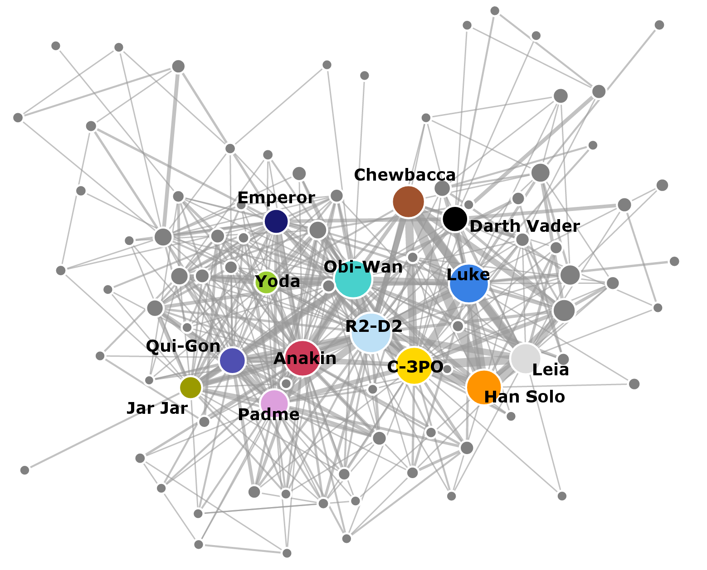
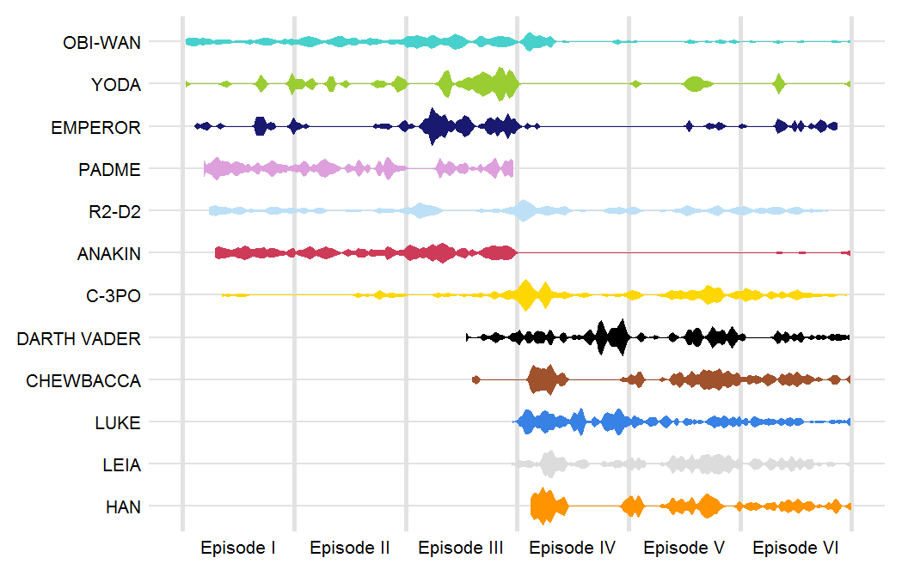
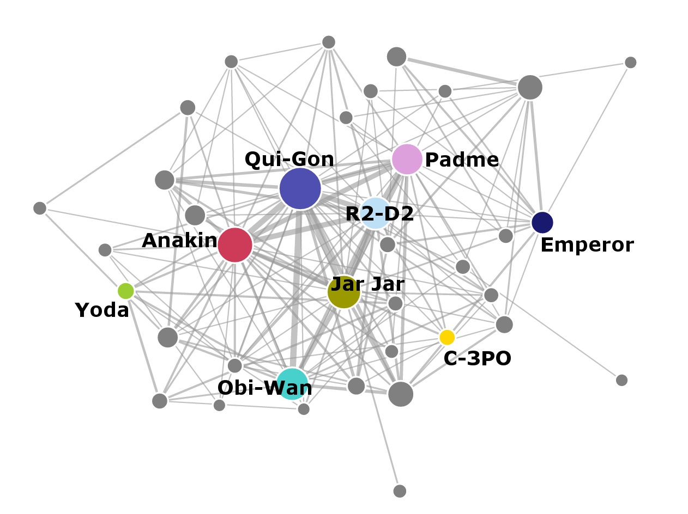
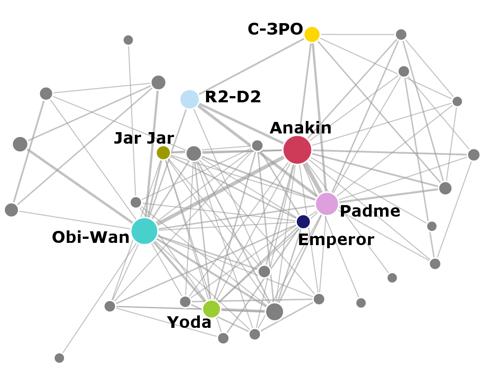
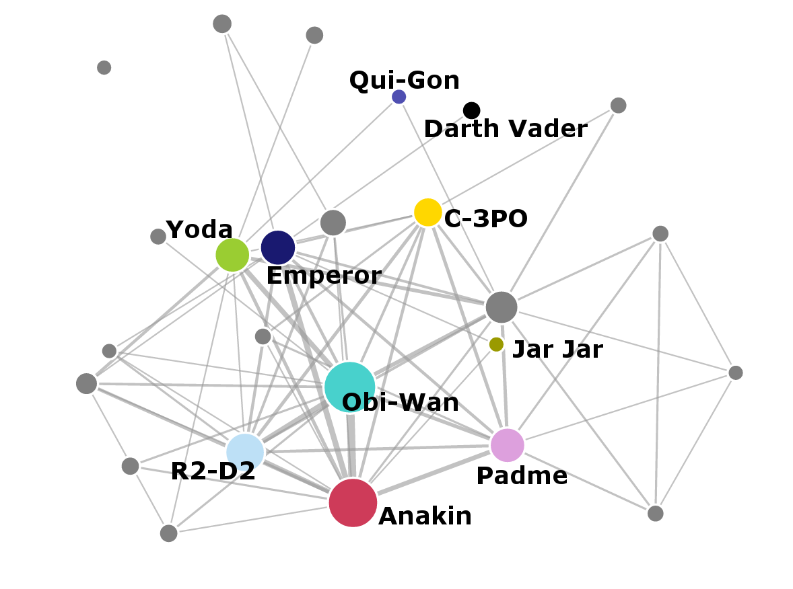
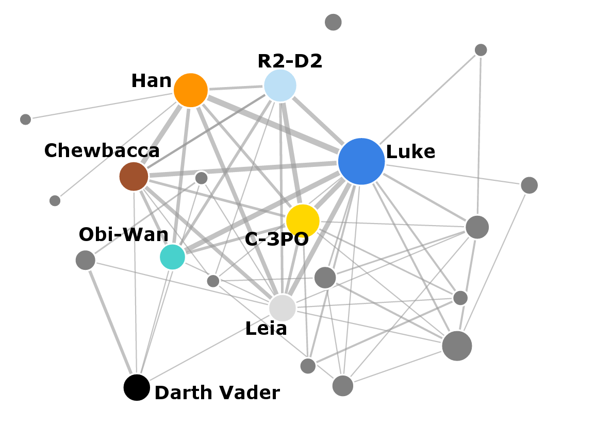
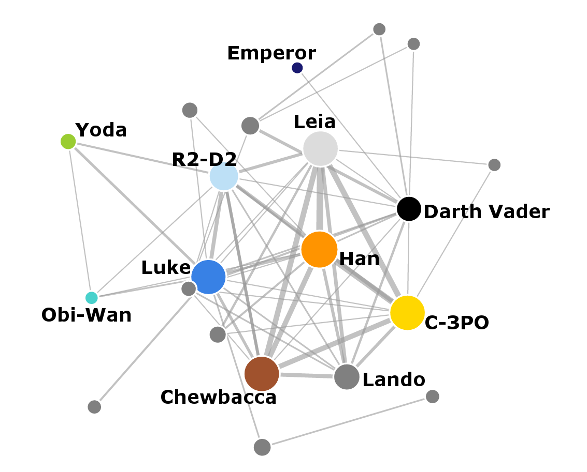
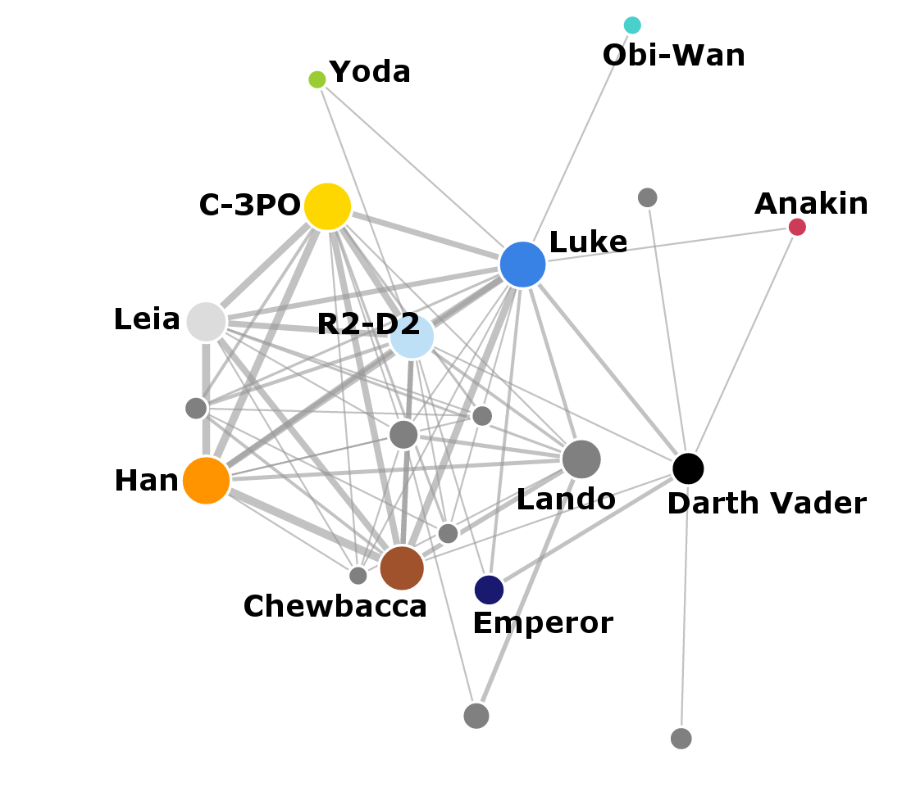

Some of us are looking forward to Christmas, and some of us are looking forward to the new film in the Star Wars franchise, The Force Awakens. Meanwhile, I decided to look at the whole 6-movie cycle from a quantitative point of view and extract the Star Wars social networks, both within each film and across the whole Star Wars universe. Looking at the social network structure reveals some surprising differences between the original trilogy and the prequels.

If you're interested in technical details of how I extracted the data, head down to the How I did the analysis section. But let's start with some visualizations.
This is the social network from all the 6 movies combined together:
 Open network
You can open the network in a full window which will show an interactive visualization of the network where you can drag individual nodes around. If you hover over the individual nodes, you'll see the name of the corresponding character.
Here the nodes represent characters in the movies. The characters are connected by a link if they both speak in the same scene. And the more the characters speak together, the thicker the link between them. The size of each node corresponds to the total number of scenes the character appears in. I made a few arguable decisions though: Anakin and Darth Vader are represented by two separate nodes, because this distinction is important to the story. On the other hand, the Emperor node also jointly represents Palpatine and Darth Sidious. I also merged Amidala with Padme.
The original trilogy (episodes IV, V and VI) on the right is mostly separated in the network from the prequel trilogy on the left because most characters appear only in one of the trilogies. The crucial nodes that are connecting the two networks are Obi-Wan Kenobi, R2-D2 and C-3PO. Especially the robots seem to play an important social function because they appear frequently across all the movies. The structures of the two sub-networks are also different. s The original trilogy has fewer important nodes (Luke, Han, Leia, Chewbacca, Darth Vader) and they are densely interconnected between themselves. The prequel trilogy has more nodes overall, with many more connections. I'll look at individual films in more detail later in the post.
Character timelines
Many of the characters feature in multiple movies, so I also created a comparison of their timelines across the individual episodes. The following graphics shows where the individual characters are mentioned in the film scripts. In order of appearance, these are the timelines of some of the main characters:

Here I included all mentions of each character, which includes other characters discussing their name. It is interesting to see how Anakin appears simultaneously with Darth Vader during Episode III, and then Darth Vader takes over. Anakin again reappears towards the end of Episode VI when Darth Vader turns away from the Dark side.
The characters that appear most consistently across all the films are the same ones that are in the centre of the social network - Obi-Wan, C-3PO and R2-D2. Yoda and the Emperor also appear across all of the films but they don't talk directly with many people in the original trilogy, which moves them off the centre in the social network.
Networks in individual films
Now let's look at the networks in individual films. Notice how the number of nodes and complexity of the networks change between the prequels and the original movies. Again, a link appears between characters if they speak within the same scene.
Episode I: The Phantom Menace
 Open network
Episode II: Attack of the Clones
 Open network
Episode III: Revenge of the Sith
 Open network
Episode IV: A New Hope
 Open network
Episode V: The Empire Strikes Back
 Open network
Episode VI: Return of the Jedi
 Open network
Importance of characters
The individual networks again show that the prequel trilogy has more characters and more interactions overall. The original episodes have less characters, but they interact more with each other.
George Lucas said:
It really is the story of the tragedy of Darth Vader, and it starts when he's nine, and it ends when he's dead. (source)
But is Darth Vader/Anakin really the central character? Let's use some methods from network analysis to see who is really important in the stories and their social structures. I computed two measures of importance in the networks for each of the films:
Degree centrality - this is simply the number of connections the node has in the network. In the Star Wars movies, this corresponds to the total number of scenes where each character speaks.
Betweenness - this measure looks at how many shortest paths in the network lead through the node. For example, imagine you are Leia and you want to send a message to Greedo - the shortest path how to send it is via Han Solo, because he interacted both with Leia and with Greedo. On the other hand if you want to send a message to Luke, you don't have to go through Han because Leia knows Luke directly. The betweenness centrality for Han is computed using the number of shortest paths between all other characters that pass through him.
The two measures both show how important is a character in the network. The degree centrality shows how many people does each character interact with directly. The betweenness relates more to how integral each of the characters is to the story. Characters with high betweenness connect different areas of the social network.
For both measures, higher values mean more importance. Here are the top 5 characters for each movie:
Episode I
Name |
Degree |
|
|---|---|---|
1. |
QUI-GON |
26 |
2. |
ANAKIN |
23 |
3. |
JAR JAR |
19 |
4. |
R2-D2 |
19 |
5. |
PADME |
18 |
Name |
Betweenness |
|
|---|---|---|
1. |
QUI-GON |
91.7 |
2. |
JAR JAR |
46.6 |
3. |
EMPEROR |
41.8 |
4. |
R2-D2 |
30.9 |
5. |
NUTE GUNRAY |
27.2 |
Episode II
Name |
Degree |
|
|---|---|---|
1. |
ANAKIN |
21 |
2. |
OBI-WAN |
19 |
3. |
PADME |
17 |
4. |
YODA |
10 |
5. |
MACE WINDU |
10 |
Name |
Betweenness |
|
|---|---|---|
1. |
OBI-WAN |
64.7 |
2. |
PADME |
56.5 |
3. |
MACE WINDU |
12.7 |
4. |
JAR JAR |
8.3 |
5. |
EMPEROR |
6.8 |
Episode III
Name |
Degree |
|
|---|---|---|
1. |
ANAKIN |
14 |
2. |
OBI-WAN |
13 |
3. |
BAIL ORGANA |
12 |
4. |
EMPEROR |
11 |
5. |
PADME |
10 |
Name |
Betweenness |
|
|---|---|---|
1. |
OBI-WAN |
22.7 |
2. |
EMPEROR |
19.0 |
3. |
PADME |
8.0 |
4. |
R2-D2 |
6.7 |
5. |
BAIL ORGANA |
4.5 |
It seems that Anakin is overall the most connected character in the first three films, based on his degree. He is however not very integral to the relations in the films! His betweenness score is so small he never makes it to the top-5 characters. This means that all the other characters interact directly between themselves rather than through Anakin. How do the same measures look for the original trilogy?
Episode IV
Name |
Degree |
|
|---|---|---|
1. |
LUKE |
15 |
2. |
LEIA |
12 |
3. |
C-3PO |
10 |
4. |
CHEWBACCA |
9 |
5. |
HAN |
8 |
Name |
Betweenness |
|
|---|---|---|
1. |
LUKE |
32.7 |
2. |
LEIA |
19.7 |
3. |
HAN |
15.0 |
4. |
C-3PO |
13.2 |
5. |
CHEWBACCA |
8.0 |
Episode V
Name |
Degree |
|
|---|---|---|
1. |
LUKE |
12 |
2. |
DARTH VADER |
12 |
3. |
HAN |
11 |
4. |
R2-D2 |
11 |
5. |
C-3PO |
10 |
Name |
Betweenness |
|
|---|---|---|
1. |
LUKE |
25.2 |
2. |
DARTH VADER |
11.3 |
3. |
LEIA |
9.7 |
4. |
HAN |
6.7 |
5. |
R2-D2 |
4.5 |
Episode VI
Name |
Degree |
|
|---|---|---|
1. |
LUKE |
15 |
2. |
R2-D2 |
12 |
3. |
C-3PO |
11 |
4. |
LEIA |
9 |
5. |
HAN |
9 |
Name |
Betweenness |
|
|---|---|---|
1. |
LUKE |
24.3 |
2. |
C-3PO |
23.0 |
3. |
DARTH VADER |
18.5 |
4. |
CHEWBACCA |
16.0 |
5. |
LANDO |
5.5 |
Here both the centrality measures show very similar results - Luke is the most central character across all the films, and using both measures. The order of characters based on the two measures is almost the same.
The centrality analysis quantifies some of the things we could see from the social networks. The prequel trilogy has more complex social structures, with more interconnected characters. This also leads to the fact that Anakin is not that central to the story - some of the storylines happen alongside Anakin's story, or involve Anakin only on the side. On the other hand, the original trilogy has a more tight-knit structure. There is a smaller number of central characters and they bind the story together - this results into the agreement between the degree and betweenness centrality measures.
Perhaps this is part of the reason why the original trilogy is more popular - the plots are more consistent and driven by the main characters. The prequels have a more decentralized structure and no clear hero. Although the stories are linked by Anakin, he is not binding the other characters together.
How do the measures look when we look at the full social network from all the episodes together? I looked at two variants of the network. In the first one Anakin and Darth Vader appear as two separate individuals, in the second I merged them together into a single person.
Joint network 1
Anakin and Darth Vader separated
Name |
Degree |
|
|---|---|---|
1. |
ANAKIN |
42 |
2. |
R2-D2 |
41 |
3. |
OBI-WAN |
37 |
4. |
PADME |
34 |
5. |
C-3PO |
31 |
Name |
Betweenness |
|
|---|---|---|
1. |
OBI-WAN |
370.4 |
2. |
PADME |
237.3 |
3. |
R2-D2 |
236.7 |
4. |
C-3PO |
222.9 |
5. |
LUKE |
194.4 |
Joint network 2
Anakin and Darth Vader fused
Name |
Degree |
|
|---|---|---|
1. |
DARTH VADER |
59 |
2. |
R2-D2 |
41 |
3. |
OBI-WAN |
37 |
4. |
PADME |
34 |
5. |
C-3PO |
31 |
Name |
Betweenness |
|
|---|---|---|
1. |
OBI-WAN |
348.7 |
2. |
C-3PO |
303.1 |
3. |
DARTH VADER |
241.5 |
4. |
R2-D2 |
227.6 |
5. |
PADME |
226.2 |
If we look at Anakin and Darth Vader separately, Anakin is still the most connected character but he's not central to the network. If we merge them together, things improve a bit. Now Darth Vader/Anakin is the third most important character in terms of betweenness. Overall, the social networks seem to show that the Star Wars movies are actually linked together by Obi-Wan Kenobi rather than Darth Vader.
How I did the analysis
As this is part of the F# Advent calendar, I used F# for most of the analysis. I combined it together with D3.js for the social network visualizations, and with R for the network centrality analysis. You can find all the source code on my GitHub. Because the whole code turned out to be relatively long, here I look only at some of the more interesting parts.
Parsing the screenplays
I started by downloading all the scripts for the 6 Star Wars movies. They are freely available from The Internet Movie Script Database (IMSDb), for example here's the script for Episode IV: The New Hope. The screenplays are only in the form of drafts that sometimes differ from the actual films - the differences are however not very big.
The first step was to parse the screenplays.
To complicate things, each of
them used a slightly different format. The screenplays themselves were in HTML, either within the
<td class="srctext"></td> tags, or within the <pre></pre> tags.
To extract the contents of each script,
I used the Html Parser from F# Data library
which allows accessing individual tags in a HTML document using statements like
1: 2: 3: |
open FSharp.Data let url = "http://www.imsdb.com/scripts/Star-Wars-A-New-Hope.html" HtmlDocument.Load(url).Descendants("pre") |
The full code for this part is available in the parseScripts.fs file.
The next step was to extract relevant information from the scripts. In general, a script looks like this:
INT. GANTRY - OUTSIDE CONTROL ROOM - REACTOR SHAFT
Luke moves along the railing and up to the control room.
[...]
LUKE
He told me enough! It was you
who killed him.
VADER
No. I am your father.
Shocked, Luke looks at Vader in utter disbelief.
LUKE
No. No. That's not true!
That's impossible!
Each scene starts with its setting: INT. (interior) or EXT. (exterior) and the location of the scene.
Then there can be some free text describing what is happening and how does the
scene look. In the dialogues, the names of characters are written
in capital letters (sometimes also in bold), followed by what they are saying.
The main signposts in the screenplay are the INT. and EXT. statements which
serve as scene separators. These were written
consistently in bold in all the 6 scripts and I used them to split them into
individual scenes:
1: 2: 3: 4: 5: 6: 7: 8: 9: 10: 11: 12: 13: |
// split the script by scene // each scene starts with either INT. or EXT. let rec splitByScene (script : string[]) scenes = let scenePattern = "<b>[ 0-9]*(INT.|EXT.)" let idx = script |> Seq.tryFindIndex (fun line -> Regex.Match(line, scenePattern).Success) match idx with | Some i -> let remainingScenes = script.[i+1 ..] let currentScene = script.[0..i-1] splitByScene remainingScenes (currentScene :: scenes) | None -> script :: scenes |
This is a recursive function that takes the full screenplay and looks for the
specific pattern, which is EXT. or INT. in bold, optionally preceded by a scene number.
The function goes through the string and when it
encounters the scene break, it splits the string into the current scene and the remaining text. Then it
runs recursively until all the scenes are extracted, using the scenes variable as an accumulator.
Getting list of characters
The previous function gave me a list of scenes for each of the movies. Extracting the characters out of them turned out to be more difficult. Some of the scenes followed the format that I showed in the example above, some of the scenes only used character names followed by a colon and their dialogue, all within the same line in the text. The only common property between the different formats was that the names were always written in capital letters.
I resorted to regular expressions, one for each screenplay format:
1: 2: 3: 4: 5: 6: 7: 8: 9: 10: 11: 12: 13: 14: 15: 16: 17: |
// Extract names of characters that speak in scenes. // A) Extract names of characters in the format "[name]:" let getFormat1Names text = let matches = Regex.Matches(text, "[/A-Z0-9 -]+ *:") let names = seq { for m in matches -> m.Value } |> Seq.map (fun name -> name.Trim([|' '; ':'|])) |> Array.ofSeq names // B) Extract names of characters in the format "<b> [name] </b>" let getFormat2Names text = let m = Regex.Match(text, "<b>[ ]*[/A-Z0-9 -]+[ ]*</b>") if m.Success then let name = m.Value.Replace("<b>","").Replace("</b>","").Trim() [| name |] else [||] |
Each of the regular expressions matches not only capital letters, but also numbers, hypens, spaces and slashes. All because the characters in Star Wars use names like "R2-D2" or even "FODE/BEED".
To actually extract the list of characters that appear across the films, I also had to take into account the fact that many characters use multiple names. Senator Palpatine turns into Darth Sidious and then into The Emperor, Amidala disguises herself as Padme (or the other way around?). Because of this I manually put together a simple file aliases.csv where I specified which names I consider to be the same. I used these as a mapping onto a unique name for each character (except for Anakin and Darth Vader).
1: 2: 3: 4: 5: 6: 7: 8: 9: 10: 11: 12: 13: 14: 15: 16: 17: 18: 19: 20: |
let aliasFile = __SOURCE_DIRECTORY__ + "/data/aliases.csv" // Use csv type provider to access the csv file with aliases type Aliases = CsvProvider<aliasFile> /// Dictionary for translating character names between aliases let aliasDict = Aliases.Load(aliasFile).Rows |> Seq.map (fun row -> row.Alias, row.Name) |> dict /// Map character names onto unique set of names let mapName name = if aliasDict.ContainsKey(name) then aliasDict.[name] else name /// Extract character names from the given scene let getCharacterNames (scene: string []) = let names1 = scene |> Seq.collect getFormat1Names let names2 = scene |> Seq.collect getFormat2Names Seq.append names1 names2 |> Seq.map mapName |> Seq.distinct |
Now I could finally extract names of characters from the individual scenes! The following function extracts all the names of characters from all the screenplay urls.
1: 2: 3: 4: 5: 6: 7: 8: 9: 10: 11: 12: 13: 14: 15: 16: 17: 18: 19: |
let allNames = scriptUrls |> List.map (fun (episode, url) -> let script = getScript url let scriptParts = script.Elements() let mainScript = scriptParts |> Seq.map (fun element -> element.ToString()) |> Seq.toArray // Now every element of the list is a single scene let scenes = splitByScene mainScript [] // Extract names appearing in each scene scenes |> List.map getCharacterNames |> Array.concat ) |> Array.concat |> Seq.countBy id |> Seq.filter (snd >> (<) 1) // filter out characters that speak in only one scene |
The only remaining problem was that many of the names were not actual names. The list was full of people called "PILOT" or "OFFICER" or "CAPTAIN". After this I manually went through the results and filtered out the names that were actual names. This resulted in the characters.csv file.
Interactions between characters
To construct the social networks, I wanted to extract all the occasions when two characters talk to each other. This happens if two characters speak within the same scene (I decided to ignore situations when people talk with each other over a transmitter, and therefore across scenes). Extracting characters that are part of the same dialogue was now similified because I could just look at the list of characters I put together in the previous step.
1: 2: 3: 4: |
let characters = File.ReadAllLines(__SOURCE_DIRECTORY__ + "/data/characters.csv") |> Array.append (Seq.append aliasDict.Keys aliasDict.Values |> Array.ofSeq) |> set |
Here I created a set of all character names and their aliases to use for lookup and filtering. Then I used it to search through the characters appearing in each scene:
1: 2: 3: 4: 5: 6: |
let scenes = splitByScene mainScript [] |> List.rev let namesInScenes = scenes |> List.map getCharacterNames |> List.map (fun names -> names |> Array.filter (fun n -> characters.Contains n)) |
Then I used the filtered list of characters to define the social network:
1: 2: 3: 4: 5: 6: 7: 8: 9: 10: 11: 12: 13: 14: 15: 16: 17: 18: 19: 20: 21: |
// Create weighted network let nodes = namesInScenes |> Seq.collect id |> Seq.countBy id // optional threshold on minimum number of mentions |> Seq.filter (fun (name, count) -> count >= countThreshold) let nodeLookup = nodes |> Seq.map fst |> set let links = namesInScenes |> List.collect (fun names -> [ for i in 0..names.Length - 1 do for j in i+1..names.Length - 1 do let n1 = names.[i] let n2 = names.[j] if nodeLookup.Contains(n1) && nodeLookup.Contains(n2) then // order nodes alphabetically yield min n1 n2, max n1 n2 ]) |> Seq.countBy id |
This gave me a list of nodes with the number of times they spoke across the whole script, which I used to
specify the size of nodes in the visualizations. Then I created a link for each time two
characters spoke within the same scene, and counted them to get the strength of each relationship.
Together, the nodes and links defined the full social network.
Finally, I exported the data into the JSON format. You can find all the networks, both the global one and the individual episodes' networks, on my Github. The full code for this step is in the getInteractions.fsx script.
Character mentions in the script
I also decided to look at where each of the characters appears throughout the six movie cycle, resulting in the timelines chart. For this I looked at all the times the name of the character was mentioned in the scripts, not limited to the number of times the character actually spoke. The code for this was largerly similar to extracting the interactions in the previous section, only here I was looking for all the mentions and not only for the dialogues. To get the actual timelines, I also kept track of the scene numbers. The following code snippet returns a list of scene numbers and characters that are mentioned in them.
1: 2: 3: 4: 5: 6: 7: 8: 9: 10: 11: 12: 13: 14: 15: 16: 17: 18: 19: 20: 21: |
let scenes = splitByScene mainScript [] |> List.rev let totalScenes = scenes.Length scenes |> List.mapi (fun sceneIdx scene -> // some names contain typos with lower-case characters let lscene = scene |> Array.map (fun s -> s.ToLower()) characters |> Array.map (fun name -> lscene |> Array.map (fun contents -> if containsName contents name then Some name else None ) |> Array.choose id) |> Array.concat |> Array.map (fun name -> mapName (name.ToUpper())) |> Seq.distinct |> Seq.map (fun name -> sceneIdx, name) |> List.ofSeq) |> List.collect id, totalScenes |
To get the full timeline, I used the scene numbers to map each episode into a \([ \text{episode index} - 1,\text{episode index}]\) interval, giving me a relative scale of where in the episode the character appeared. The scene times in intervals [0,1] are from Episode I, in [1,2] correspond to Episode II etc.
1: 2: 3: 4: 5: 6: 7: |
// extract timelines [0 .. 5] |> List.map (fun episodeIdx -> getSceneAppearances episodeIdx) |> List.mapi (fun episodeIdx (sceneAppearances, total) -> sceneAppearances |> List.map (fun (scene, name) -> float episodeIdx + float scene / float total, name)) |
I saved this data into an ill-formated pseudo-csv file,
where each row contains a character name and the relative times the character appeared across the 6 films,
separated by commas.
The full code is in the
getMentions.fsx file.
Adding non-speaking characters
When I compared the interactions and the characters that were mentioned in the scripts, I noticed that something was different: there was no R2-D2 and no Chewbacca. Not only the poor Wookiee didn't receive any medal at the end of Episode IV (like the human heroes did), but he was missing from all the dialogues in the screenplays! Actually, both Chewbacca and R2-D2 appear throughout the scripts as non-speaking characters. They are mentioned in lines like
Artoo finds something that makes him whistle wildly.
or
A sudden frown crosses Chewbacca's face and he begins yelling gibberish at the tiny robot.
It wouldn't be a proper Star Wars social network if we ignored these two important characters. To correct for the racial discrimination against Wookiees and astromech droids, I decided to insert them into the social network defined by dialogues.
I looked again at all the times these characters got mentioned in the screenplay. The mentions also define a social network where two characters are linked together if they are mentioned in the same scene. Because the characters are included in the scene descriptions and they also talk about each other more than they actually appear on screen, the network defined by all mentions is much messier than the network defined by direct interactions. Because of this, I couldn't use the Chewbacca's and R2-D2's connections directly in the social network. I could however use it as an approximation.
I extracted the node sizes and links for the two missing characters from the network defined by mentions. To transform them into connections from the social network, I decided to scale all their values by comparing them with similar characters. For this, I chose C-3PO as a proxy for R2-D2, and Han as a proxy for Chewie, assuming their interactions were largely similar. Then I applied the following formula to compute the link strengths in the dialogue social network (this example uses Chewbacca and Han):
\[w_{\text{Han}} = \frac{1}{N} \sum_{x} \frac{\text{link weight}_{\text{dialogues}}(\text{Han}, x)}{\text{link weight}_{\text{mentions}}(\text{Han}, x)} \]
\[\text{link weight}_{\text{dialogues}}(\text{Chewie}, x) = w_{\text{Han}} \times \text{link weight}_{\text{mentions}}(\text{Chewie}, x)\]
I used this highly scientific equation to recompute all the link strenghts and also the node sizes. The weight factor was around 0.5 both for Han and C-3PO, which means the characters were on average mentioned two times more than they actually spoke in the films. After this, I discarded all the links that had their weight smaller than one. The code for this step is relatively long but not very interesting.
Visualizations
After manually adding back Chewbacca and R2-D2, I finally had the full set of social networks both for the individual movies and for the full franchise. I used the Force to visualize the networks... well, I actually used the force-directed network layout from the D3.js library. This visualization method uses a physical simulation of charged particles to generate a network layout. The most important part of the D3 JavaScript file is the following part:
d3.json("starwars-episode-1-interactions-allCharacters.json", function(error, graph) {
/* More code here */
var link = svg.selectAll(".link")
.data(graph.links)
.enter().append("line")
.attr("class", "link")
.style("stroke-width", function(d) { return Math.sqrt(d.value); });
var node = svg.selectAll(".node")
.data(graph.nodes)
.enter().append("circle")
.attr("class", "node")
.attr("r", 5)
.style("fill", function (d) { return d.colour; })
.attr("r", function (d) { return 2*Math.sqrt(d.value) + 2; })
.call(force.drag);
/* More code here */
});
In the previous steps I saved all the networks in JSON. Here I loaded them and defined the nodes and
links using the data from the JSON. For each node, I also added a colour for each node, and a value specifying
the importance (given by the number of times the character spoke in the script). This defines
the radius r attribute for the node object, scaling each node realative to its importance in the network.
Similarly for the links, I also stored the strength of each link in the JSON file, and here I used it to
define the stroke-width of each link.
Centrality analysis
As the final step, the analysis of centrality of individual characters was probably the simplest one. I used the RProvider together with the igraph R package to analyse the networks from F#. First I loaded the network using the JSON type provider from FSharp.Data:
1: 2: 3: 4: 5: 6: 7: 8: |
open RProvider.igraph let [<Literal>] linkFile = __SOURCE_DIRECTORY__ + "/networks/starwars-episode-1-interactions.json" type Network = JsonProvider<linkFile> let file = __SOURCE_DIRECTORY__ + "/networks/starwars-full-interactions-allCharacters.json" let nodes = Network.Load(file).Nodes |> Seq.map (fun node -> node.Name) let links = Network.Load(file).Links |
The links variable contains all the links in the network, where the end nodes are specified
by their indices. To simplify the interpretation of results, I mapped all the indices to the corresponding
character names:
1: 2: 3: 4: 5: 6: 7: |
let nodeLookup = nodes |> Seq.mapi (fun i name -> i, name) |> dict let edges = links |> Array.collect (fun link -> let n1 = nodeLookup.[link.Source] let n2 = nodeLookup.[link.Target] [| n1 ; n2 |] ) |
Then I created an undirected graph object using the igraph library:
1: 2: 3: |
let graph = namedParams["edges", box edges; "dir", box "undirected"] |> R.graph |
Calculating the betweenness and degree centrality was then as simple as
1: 2: |
let centrality = R.betweenness(graph) let degreeCentrality = R.degree(graph) |
The full code that I used to produce the tables comparing the individual episodes is available here.
Summary
As with most data science tasks, the most difficult step here was getting the data into a good shape. The Star Wars screenplays all had slightly different formats so I spent most of the time figuring out the common properties of the HTML documents to create a common function for parsing them and for identifying character names. After that, it was just a little fight for Wookiee and droid equality when I decided to combine data sources to infer their social connections. I made the extracted networks available in JSON on my GitHub so you can also play with them.
I hope you endjoyed the visualizations, and may the force be with you!
Links
- Source code: github.com/evelinag/StarWars-social-network
- Extracted networks in JSON format: github.com/evelinag/StarWars-social-network/tree/master/networks
- Screenplays: imsdb.com
Full name: starwarssocialnetwork.url
Full name: starwarssocialnetwork.splitByScene
val string : value:'T -> string
Full name: Microsoft.FSharp.Core.Operators.string
--------------------
type string = System.String
Full name: Microsoft.FSharp.Core.string
from Microsoft.FSharp.Collections
Full name: Microsoft.FSharp.Collections.Seq.tryFindIndex
Full name: starwarssocialnetwork.getFormat1Names
val seq : sequence:seq<'T> -> seq<'T>
Full name: Microsoft.FSharp.Core.Operators.seq
--------------------
type seq<'T> = System.Collections.Generic.IEnumerable<'T>
Full name: Microsoft.FSharp.Collections.seq<_>
Full name: Microsoft.FSharp.Collections.Seq.map
from Microsoft.FSharp.Collections
Full name: Microsoft.FSharp.Collections.Array.ofSeq
Full name: starwarssocialnetwork.getFormat2Names
Full name: starwarssocialnetwork.aliasFile
Full name: starwarssocialnetwork.Aliases
Full name: starwarssocialnetwork.aliasDict
Dictionary for translating character names between aliases
Full name: Microsoft.FSharp.Core.ExtraTopLevelOperators.dict
Full name: starwarssocialnetwork.mapName
Map character names onto unique set of names
Full name: starwarssocialnetwork.getCharacterNames
Extract character names from the given scene
Full name: Microsoft.FSharp.Collections.Seq.collect
Full name: Microsoft.FSharp.Collections.Seq.append
Full name: Microsoft.FSharp.Collections.Seq.distinct
Full name: starwarssocialnetwork.allNames
module List
from Microsoft.FSharp.Collections
--------------------
type List<'T> =
| ( [] )
| ( :: ) of Head: 'T * Tail: 'T list
interface IEnumerable
interface IEnumerable<'T>
member Head : 'T
member IsEmpty : bool
member Item : index:int -> 'T with get
member Length : int
member Tail : 'T list
static member Cons : head:'T * tail:'T list -> 'T list
static member Empty : 'T list
Full name: Microsoft.FSharp.Collections.List<_>
Full name: Microsoft.FSharp.Collections.List.map
Full name: Microsoft.FSharp.Collections.Seq.toArray
Full name: Microsoft.FSharp.Collections.Array.concat
Full name: Microsoft.FSharp.Collections.Seq.countBy
Full name: Microsoft.FSharp.Core.Operators.id
Full name: Microsoft.FSharp.Collections.Seq.filter
Full name: Microsoft.FSharp.Core.Operators.snd
Full name: starwarssocialnetwork.characters
Full name: Microsoft.FSharp.Collections.Array.append
Full name: Microsoft.FSharp.Core.ExtraTopLevelOperators.set
Full name: starwarssocialnetwork.scenes
Full name: Microsoft.FSharp.Collections.List.rev
Full name: starwarssocialnetwork.namesInScenes
Full name: Microsoft.FSharp.Collections.Array.filter
Full name: starwarssocialnetwork.nodes
Full name: starwarssocialnetwork.nodeLookup
Full name: Microsoft.FSharp.Core.Operators.fst
Full name: starwarssocialnetwork.links
Full name: Microsoft.FSharp.Collections.List.collect
Full name: Microsoft.FSharp.Core.Operators.min
Full name: Microsoft.FSharp.Core.Operators.max
Full name: Microsoft.FSharp.Collections.List.mapi
Full name: Microsoft.FSharp.Collections.Array.map
System.String.ToLower(culture: System.Globalization.CultureInfo) : string
Full name: Microsoft.FSharp.Collections.Array.choose
Full name: Microsoft.FSharp.Collections.List.ofSeq
val float : value:'T -> float (requires member op_Explicit)
Full name: Microsoft.FSharp.Core.Operators.float
--------------------
type float = System.Double
Full name: Microsoft.FSharp.Core.float
--------------------
type float<'Measure> = float
Full name: Microsoft.FSharp.Core.float<_>
type LiteralAttribute =
inherit Attribute
new : unit -> LiteralAttribute
Full name: Microsoft.FSharp.Core.LiteralAttribute
--------------------
new : unit -> LiteralAttribute
Full name: starwarssocialnetwork.linkFile
Full name: starwarssocialnetwork.Network
Full name: starwarssocialnetwork.file
Full name: starwarssocialnetwork.nodes
Full name: starwarssocialnetwork.links
Full name: starwarssocialnetwork.nodeLookup
Full name: Microsoft.FSharp.Collections.Seq.mapi
Full name: starwarssocialnetwork.edges
Full name: Microsoft.FSharp.Collections.Array.collect
Full name: starwarssocialnetwork.graph
Full name: Microsoft.FSharp.Core.Operators.box
Full name: starwarssocialnetwork.centrality
Full name: starwarssocialnetwork.degreeCentrality